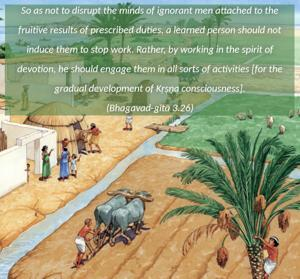
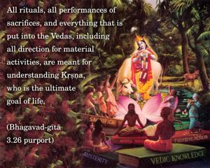
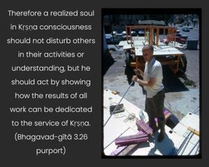
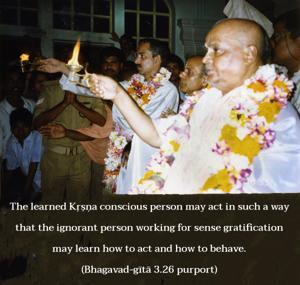

So as not to disrupt the minds of ignorant men attached to the fruitive results of prescribed duties, a learned person should not induce them to stop work. Rather, by working in the spirit of devotion, he should engage them in all sorts of activities [for the gradual development of Kṛṣṇa consciousness].




Vedaiś ca sarvair aham eva vedyaḥ. That is the end of all Vedic rituals. All rituals, all performances of sacrifices, and everything that is put into the Vedas, including all direction for material activities, are meant for understanding Kṛṣṇa, who is the ultimate goal of life. But because the conditioned souls do not know anything beyond sense gratification, they study the Vedas to that end. But through fruitive activities and sense gratification regulated by the Vedic rituals one is gradually elevated to Kṛṣṇa consciousness. Therefore a realized soul in Kṛṣṇa consciousness should not disturb others in their activities or understanding, but he should act by showing how the results of all work can be dedicated to the service of Kṛṣṇa. The learned Kṛṣṇa conscious person may act in such a way that the ignorant person working for sense gratification may learn how to act and how to behave. Although the ignorant man is not to be disturbed in his activities, a slightly developed Kṛṣṇa conscious person may directly be engaged in the service of the Lord without waiting for other Vedic formulas. For this fortunate man there is no need to follow the Vedic rituals, because by direct Kṛṣṇa consciousness one can have all the results one would otherwise derive from following one’s prescribed duties.